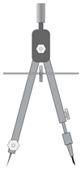

Constructions
Geometric Constructions ... Animated!

"Construction" in Geometry means to draw shapes, angles or lines accurately.
These constructions use only compass, straightedge (a ruler, but not using the numbers) and a pencil.

This is the "pure" form of geometric construction: no numbers involved!
Basics
Learn these two first, they are used a lot:


Points and Lines


Angles
And it is useful to know how to do 30°, 45° and 60° angles. We can use the angle bisector method (above) to create other angles such as 15°, and so on.


Triangle Basics


Triangle Centers


Circle Basics


Circles and Tangents


Polygons
And for the "Master Class":


(Note: You can also see how to Use the Drafting Triangle and Ruler, Use the Protractor, and How to construct a Triangle With 3 Known Sides, but they are not "pure" geometric constructions.)